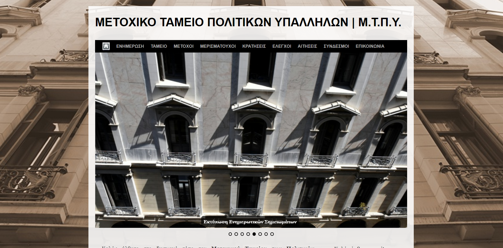

2022-2023
Msc at Information Systems & Services,
majoring in Big Data and Analytics
The Postgraduate Programme “Digital Systems & Services” aims at educating scientists and professionals in areas of Digital Systems and Services
2014–2021
Bachelor in Informatics and Telecommunications, E.K.P.A.-
Holder of a certificate in the Pedagogical Teaching Proficiency Program

In the undergraduate program, special emphasis is placed on acquiring knowledge and skills in programming of all types (e.g. big data, artificial intelligence, software, hardware, internet of things, machine learning, signal and information processing, telecommunications, networks, space) and consists of two two-year study cycles.
In this section you will see some of my work with unity where i used vuforia list and many techniques
In this section i have some examples of some sites and eshop i created with wordpress and shopify.

During this time I was particularly involved in management of the MTPY website https://www.mtpy.gr/, the maintenance of the electronic posting of documents and creation of a new website of the Fund, particularly improved, in
relation to the previous one, in terms of information and usability, with a purpose replacing the old website.
May-August 2019
Computerization Department
of the Air Force History Museum
Using my knowledge as a fourth-year student of the School of Informatics and Telecommunications of the National and Kapodistrian University of Athens, I carried out the following actions